Statistical learning: linear regression
library(tidyverse)
library(modelr)
library(broom)
library(rcfss)
set.seed(1234)
theme_set(theme_minimal())Objectives
Linear models using ggplot
Linear models are the simplest to understand. They adopt a generic form
\[y = \beta_0 + \beta_1 * x\]
where \(y\) is the outcome of interest, \(x\) is the explanatory or predictor variable, and \(\beta_0\) and \(\beta_1\) are parameters that vary to capture different patterns. Given the empirical values you have for \(x\) and \(y\), you generate a fitted model that finds the values for the parameters that best fit the data.
ggplot(sim1, aes(x, y)) +
geom_point()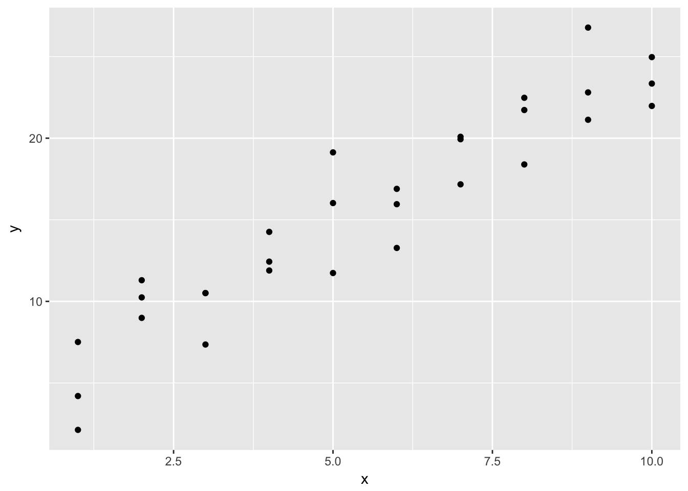
This looks like a linear relationship. We could randomly generate parameters for the formula \(y = \beta_0 + \beta_1 * x\) to try and explain or predict the relationship between \(x\) and \(y\):
models <- tibble(
a1 = runif(250, -20, 40),
a2 = runif(250, -5, 5)
)
ggplot(sim1, aes(x, y)) +
geom_abline(aes(intercept = a1, slope = a2), data = models, alpha = 1/4) +
geom_point()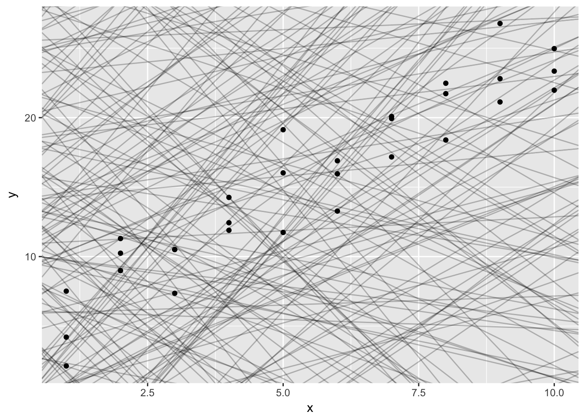
But obviously some parameters are better than others. We need a definition that can be used to differentiate good parameters from bad parameters. One approach widely used is called least squares - it means that the overall solution minimizes the sum of the squares of the errors made in the results of every single equation. The errors are simply the vertical difference between the actual values for \(y\) and the predicted values for \(y\).
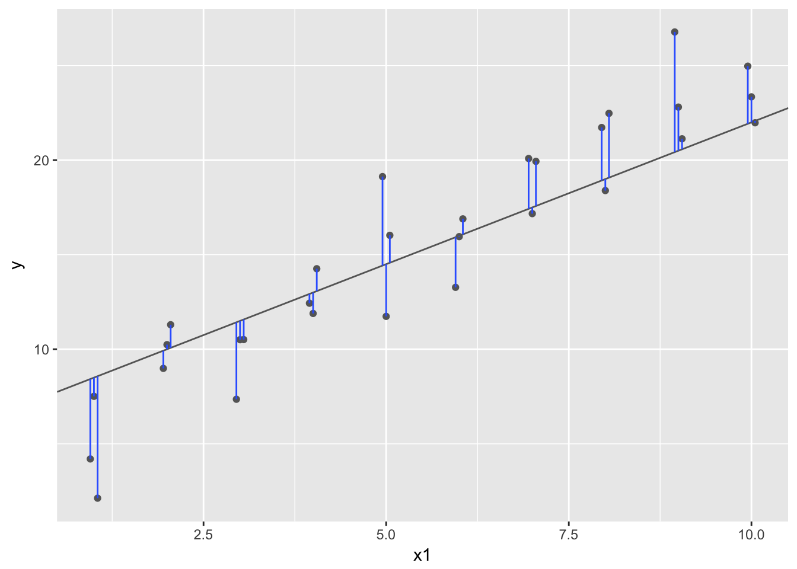
R for Data Science walks you through the steps to perform all these calculations manually by writing your own functions. I encourage you to read through and practice some of this code, especially if you have no experience with linear models.
However for our purposes here I will assume you at least get the basics of this process. You can use ggplot2 to draw the best-fit line:
ggplot(sim1, aes(x, y)) +
geom_point() +
geom_smooth(method = "lm")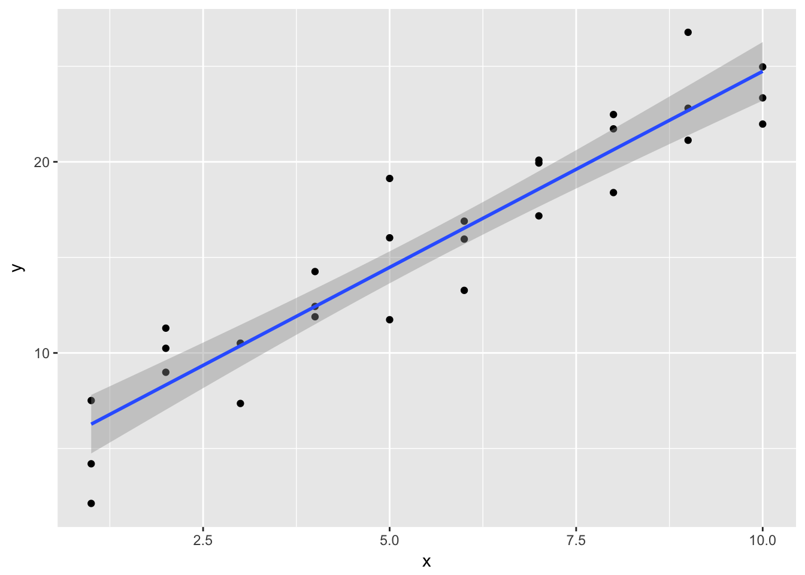
The line in blue is the best-fit line, with 95% confidence intervals in grey indicating a range of values so defined that there is a 95% probability that the true value of a parameter lies within it. If you want to learn more about the precise definition of confidence intervals and the debate over how useful they actually are, you should take a statistics class.
Estimating a linear model using lm()
But drawing a picture is not always good enough. What if you want to know the actual values of the estimated parameters? To do that, we use the lm() function:
sim1_mod <- lm(y ~ x, data = sim1)
coef(sim1_mod)## (Intercept) x
## 4.220822 2.051533The lm() function takes two parameters. The first is a formula specifying the equation to be estimated (lm() translates y ~ x into \(y = \beta_0 + \beta_1 * x\)). The second is of course the data frame containing the variables.
Note that we have now begun to leave the tidyverse universe. lm() is part of the base R program, and the result of lm() is decidedly not tidy.
str(sim1_mod)## List of 12
## $ coefficients : Named num [1:2] 4.22 2.05
## ..- attr(*, "names")= chr [1:2] "(Intercept)" "x"
## $ residuals : Named num [1:30] -2.072 1.238 -4.147 0.665 1.919 ...
## ..- attr(*, "names")= chr [1:30] "1" "2" "3" "4" ...
## $ effects : Named num [1:30] -84.92 32.275 -4.13 0.761 2.015 ...
## ..- attr(*, "names")= chr [1:30] "(Intercept)" "x" "" "" ...
## $ rank : int 2
## $ fitted.values: Named num [1:30] 6.27 6.27 6.27 8.32 8.32 ...
## ..- attr(*, "names")= chr [1:30] "1" "2" "3" "4" ...
## $ assign : int [1:2] 0 1
## $ qr :List of 5
## ..$ qr : num [1:30, 1:2] -5.477 0.183 0.183 0.183 0.183 ...
## .. ..- attr(*, "dimnames")=List of 2
## .. .. ..$ : chr [1:30] "1" "2" "3" "4" ...
## .. .. ..$ : chr [1:2] "(Intercept)" "x"
## .. ..- attr(*, "assign")= int [1:2] 0 1
## ..$ qraux: num [1:2] 1.18 1.24
## ..$ pivot: int [1:2] 1 2
## ..$ tol : num 1e-07
## ..$ rank : int 2
## ..- attr(*, "class")= chr "qr"
## $ df.residual : int 28
## $ xlevels : Named list()
## $ call : language lm(formula = y ~ x, data = sim1)
## $ terms :Classes 'terms', 'formula' language y ~ x
## .. ..- attr(*, "variables")= language list(y, x)
## .. ..- attr(*, "factors")= int [1:2, 1] 0 1
## .. .. ..- attr(*, "dimnames")=List of 2
## .. .. .. ..$ : chr [1:2] "y" "x"
## .. .. .. ..$ : chr "x"
## .. ..- attr(*, "term.labels")= chr "x"
## .. ..- attr(*, "order")= int 1
## .. ..- attr(*, "intercept")= int 1
## .. ..- attr(*, "response")= int 1
## .. ..- attr(*, ".Environment")=<environment: R_GlobalEnv>
## .. ..- attr(*, "predvars")= language list(y, x)
## .. ..- attr(*, "dataClasses")= Named chr [1:2] "numeric" "numeric"
## .. .. ..- attr(*, "names")= chr [1:2] "y" "x"
## $ model :'data.frame': 30 obs. of 2 variables:
## ..$ y: num [1:30] 4.2 7.51 2.13 8.99 10.24 ...
## ..$ x: int [1:30] 1 1 1 2 2 2 3 3 3 4 ...
## ..- attr(*, "terms")=Classes 'terms', 'formula' language y ~ x
## .. .. ..- attr(*, "variables")= language list(y, x)
## .. .. ..- attr(*, "factors")= int [1:2, 1] 0 1
## .. .. .. ..- attr(*, "dimnames")=List of 2
## .. .. .. .. ..$ : chr [1:2] "y" "x"
## .. .. .. .. ..$ : chr "x"
## .. .. ..- attr(*, "term.labels")= chr "x"
## .. .. ..- attr(*, "order")= int 1
## .. .. ..- attr(*, "intercept")= int 1
## .. .. ..- attr(*, "response")= int 1
## .. .. ..- attr(*, ".Environment")=<environment: R_GlobalEnv>
## .. .. ..- attr(*, "predvars")= language list(y, x)
## .. .. ..- attr(*, "dataClasses")= Named chr [1:2] "numeric" "numeric"
## .. .. .. ..- attr(*, "names")= chr [1:2] "y" "x"
## - attr(*, "class")= chr "lm"The result is stored in a complex list that contains a lot of important information, some of which you may recognize but most of it you do not. Here I will show you tools for extracting useful information from lm().
Generating predicted values
We can use sim1_mod to generate predicted values, or the expected value for \(Y\) given our knowledge of hypothetical observations with values for \(X\), based on the estimated parameters using the data_grid() and add_predictions() functions from the modelr package. data_grid() generates an evenly spaced grid of data points covering the region where observed data lies. The first argument is a data frame, and subsequent arguments identify unique columns and generates all possible combinations.
grid <- sim1 %>%
data_grid(x)
grid## # A tibble: 10 × 1
## x
## <int>
## 1 1
## 2 2
## 3 3
## 4 4
## 5 5
## 6 6
## 7 7
## 8 8
## 9 9
## 10 10add_predictions() takes a data frame and a model, and uses the model to generate predictions for each observation in the data frame.
grid <- grid %>%
add_predictions(sim1_mod)
grid## # A tibble: 10 × 2
## x pred
## <int> <dbl>
## 1 1 6.272355
## 2 2 8.323888
## 3 3 10.375421
## 4 4 12.426954
## 5 5 14.478487
## 6 6 16.530020
## 7 7 18.581553
## 8 8 20.633087
## 9 9 22.684620
## 10 10 24.736153Using this information, we can draw the best-fit line without using geom_smooth(), and instead build it directly from the predicted values.
ggplot(sim1, aes(x)) +
geom_point(aes(y = y)) +
geom_line(aes(y = pred), data = grid, color = "red", size = 1)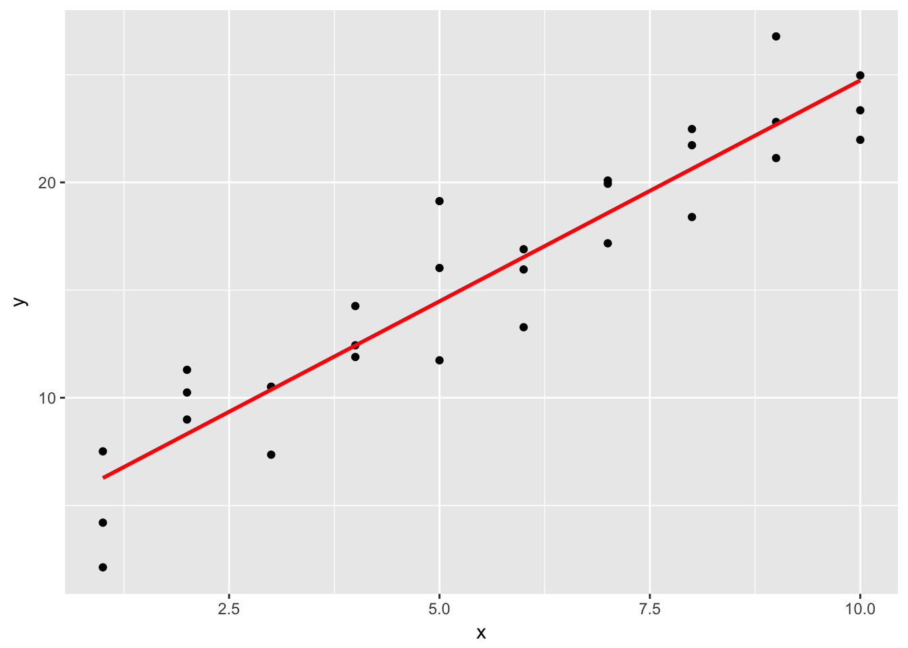
This looks like the line from before, but without the confidence interval. This is a bit more involved of a process, but it can work with any type of model you create - not just very basic, linear models.
Residuals
We can also calculate the residuals, or that distance between the actual and predicted values of \(y\).
sim1 <- sim1 %>%
add_residuals(sim1_mod)
sim1## # A tibble: 30 × 3
## x y resid
## <int> <dbl> <dbl>
## 1 1 4.199913 -2.072442018
## 2 1 7.510634 1.238279125
## 3 1 2.125473 -4.146882207
## 4 2 8.988857 0.664969362
## 5 2 10.243105 1.919217378
## 6 2 11.296823 2.972935148
## 7 3 7.356365 -3.019056466
## 8 3 10.505349 0.129928252
## 9 3 10.511601 0.136179642
## 10 4 12.434589 0.007634878
## # ... with 20 more rowsggplot(sim1, aes(resid)) +
geom_freqpoly(binwidth = 0.5)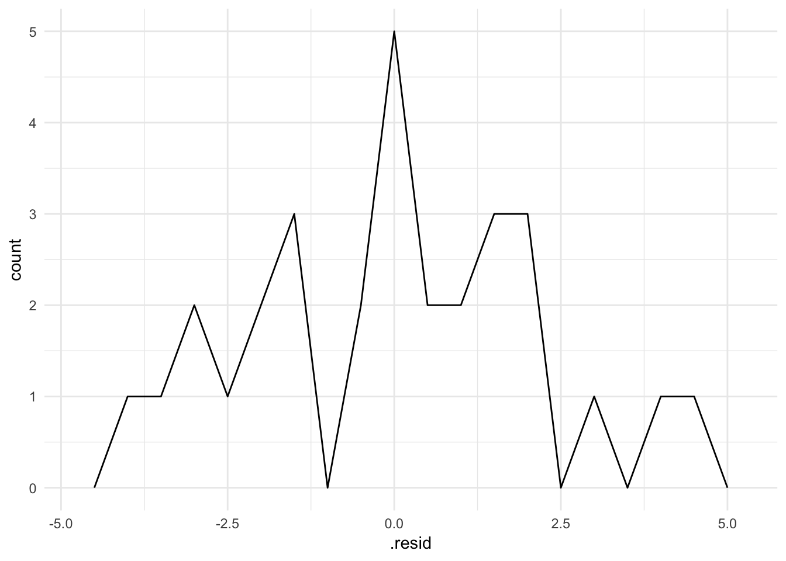
Reviewing your residuals can be helpful. Sometimes your model is better at predicting some types of observations better than others. This could help you isolate further patterns and improve the predictive accuracy of your model.
Estimating a linear model(s) using gapminder
Overall model
Recall the gapminder dataset, which includes measures of life expectancy over time for all countries in the world.
library(gapminder)
gapminder## # A tibble: 1,704 × 6
## country continent year lifeExp pop gdpPercap
## <fctr> <fctr> <int> <dbl> <int> <dbl>
## 1 Afghanistan Asia 1952 28.801 8425333 779.4453
## 2 Afghanistan Asia 1957 30.332 9240934 820.8530
## 3 Afghanistan Asia 1962 31.997 10267083 853.1007
## 4 Afghanistan Asia 1967 34.020 11537966 836.1971
## 5 Afghanistan Asia 1972 36.088 13079460 739.9811
## 6 Afghanistan Asia 1977 38.438 14880372 786.1134
## 7 Afghanistan Asia 1982 39.854 12881816 978.0114
## 8 Afghanistan Asia 1987 40.822 13867957 852.3959
## 9 Afghanistan Asia 1992 41.674 16317921 649.3414
## 10 Afghanistan Asia 1997 41.763 22227415 635.3414
## # ... with 1,694 more rowsLet’s say we want to try and understand how life expectancy changes over time. We could visualize the data using a line graph:
gapminder %>%
ggplot(aes(year, lifeExp, group = country)) +
geom_line(alpha = 1/3)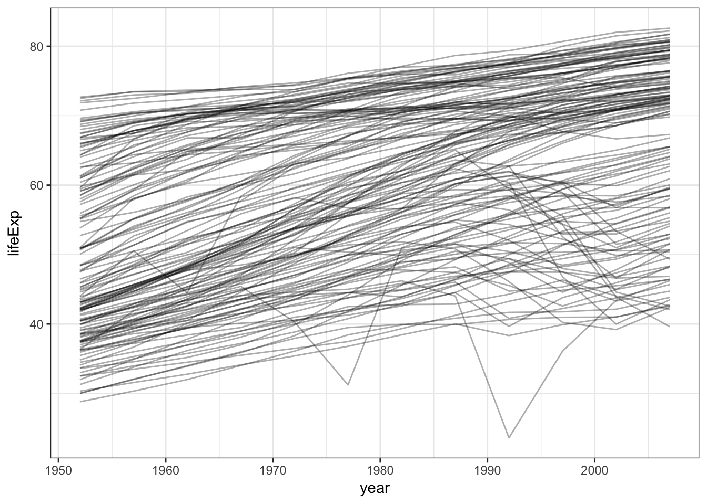
But this is incredibly noise. Why not estimate a simple linear model that summarizes this trend?
gapminder_mod <- lm(lifeExp ~ year, data = gapminder)
summary(gapminder_mod)##
## Call:
## lm(formula = lifeExp ~ year, data = gapminder)
##
## Residuals:
## Min 1Q Median 3Q Max
## -39.949 -9.651 1.697 10.335 22.158
##
## Coefficients:
## Estimate Std. Error t value Pr(>|t|)
## (Intercept) -585.65219 32.31396 -18.12 <2e-16 ***
## year 0.32590 0.01632 19.96 <2e-16 ***
## ---
## Signif. codes: 0 '***' 0.001 '**' 0.01 '*' 0.05 '.' 0.1 ' ' 1
##
## Residual standard error: 11.63 on 1702 degrees of freedom
## Multiple R-squared: 0.1898, Adjusted R-squared: 0.1893
## F-statistic: 398.6 on 1 and 1702 DF, p-value: < 2.2e-16grid <- gapminder %>%
data_grid(year, country)
grid## # A tibble: 1,704 × 2
## year country
## <int> <fctr>
## 1 1952 Afghanistan
## 2 1952 Albania
## 3 1952 Algeria
## 4 1952 Angola
## 5 1952 Argentina
## 6 1952 Australia
## 7 1952 Austria
## 8 1952 Bahrain
## 9 1952 Bangladesh
## 10 1952 Belgium
## # ... with 1,694 more rowsgrid <- grid %>%
add_predictions(gapminder_mod)
grid## # A tibble: 1,704 × 3
## year country pred
## <int> <fctr> <dbl>
## 1 1952 Afghanistan 50.51208
## 2 1952 Albania 50.51208
## 3 1952 Algeria 50.51208
## 4 1952 Angola 50.51208
## 5 1952 Argentina 50.51208
## 6 1952 Australia 50.51208
## 7 1952 Austria 50.51208
## 8 1952 Bahrain 50.51208
## 9 1952 Bangladesh 50.51208
## 10 1952 Belgium 50.51208
## # ... with 1,694 more rowsggplot(gapminder, aes(year, group = country)) +
geom_line(aes(y = lifeExp), alpha = .2) +
geom_line(aes(y = pred), data = grid, color = "red", size = 1)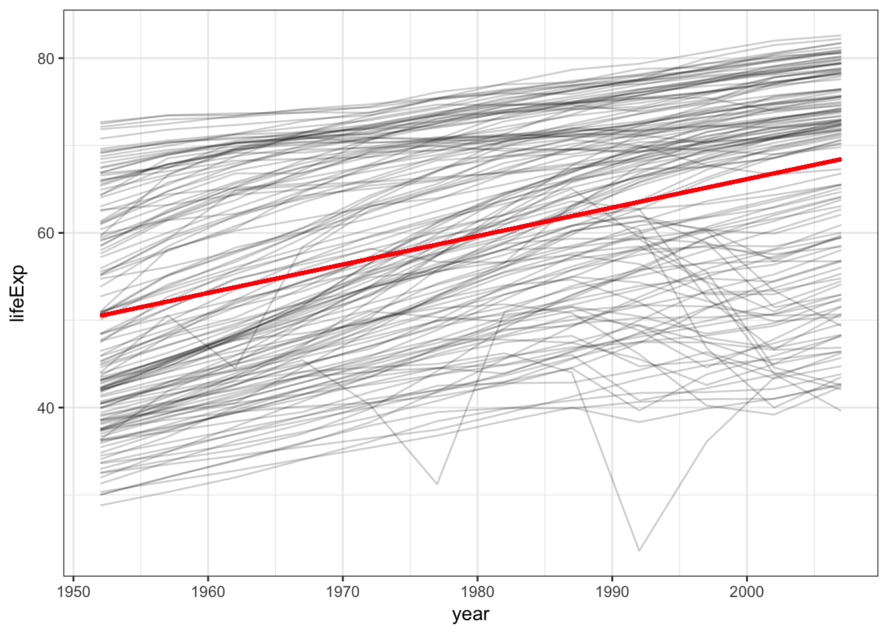
So it appears that there is a positive trend - that is, over time life expectancy is rising. But we can also see a lot of variation in that trend - some countries are doing much better than others. We’ll come back to that in a bit.
Extracting model statistics
Model objects are not very pretty in R. Recall the complicated data structure I mentioned above:
str(gapminder_mod)## List of 12
## $ coefficients : Named num [1:2] -585.652 0.326
## ..- attr(*, "names")= chr [1:2] "(Intercept)" "year"
## $ residuals : Named num [1:1704] -21.7 -21.8 -21.8 -21.4 -20.9 ...
## ..- attr(*, "names")= chr [1:1704] "1" "2" "3" "4" ...
## $ effects : Named num [1:1704] -2455.1 232.2 -20.8 -20.5 -20.2 ...
## ..- attr(*, "names")= chr [1:1704] "(Intercept)" "year" "" "" ...
## $ rank : int 2
## $ fitted.values: Named num [1:1704] 50.5 52.1 53.8 55.4 57 ...
## ..- attr(*, "names")= chr [1:1704] "1" "2" "3" "4" ...
## $ assign : int [1:2] 0 1
## $ qr :List of 5
## ..$ qr : num [1:1704, 1:2] -41.2795 0.0242 0.0242 0.0242 0.0242 ...
## .. ..- attr(*, "dimnames")=List of 2
## .. .. ..$ : chr [1:1704] "1" "2" "3" "4" ...
## .. .. ..$ : chr [1:2] "(Intercept)" "year"
## .. ..- attr(*, "assign")= int [1:2] 0 1
## ..$ qraux: num [1:2] 1.02 1.03
## ..$ pivot: int [1:2] 1 2
## ..$ tol : num 1e-07
## ..$ rank : int 2
## ..- attr(*, "class")= chr "qr"
## $ df.residual : int 1702
## $ xlevels : Named list()
## $ call : language lm(formula = lifeExp ~ year, data = gapminder)
## $ terms :Classes 'terms', 'formula' language lifeExp ~ year
## .. ..- attr(*, "variables")= language list(lifeExp, year)
## .. ..- attr(*, "factors")= int [1:2, 1] 0 1
## .. .. ..- attr(*, "dimnames")=List of 2
## .. .. .. ..$ : chr [1:2] "lifeExp" "year"
## .. .. .. ..$ : chr "year"
## .. ..- attr(*, "term.labels")= chr "year"
## .. ..- attr(*, "order")= int 1
## .. ..- attr(*, "intercept")= int 1
## .. ..- attr(*, "response")= int 1
## .. ..- attr(*, ".Environment")=<environment: R_GlobalEnv>
## .. ..- attr(*, "predvars")= language list(lifeExp, year)
## .. ..- attr(*, "dataClasses")= Named chr [1:2] "numeric" "numeric"
## .. .. ..- attr(*, "names")= chr [1:2] "lifeExp" "year"
## $ model :'data.frame': 1704 obs. of 2 variables:
## ..$ lifeExp: num [1:1704] 28.8 30.3 32 34 36.1 ...
## ..$ year : int [1:1704] 1952 1957 1962 1967 1972 1977 1982 1987 1992 1997 ...
## ..- attr(*, "terms")=Classes 'terms', 'formula' language lifeExp ~ year
## .. .. ..- attr(*, "variables")= language list(lifeExp, year)
## .. .. ..- attr(*, "factors")= int [1:2, 1] 0 1
## .. .. .. ..- attr(*, "dimnames")=List of 2
## .. .. .. .. ..$ : chr [1:2] "lifeExp" "year"
## .. .. .. .. ..$ : chr "year"
## .. .. ..- attr(*, "term.labels")= chr "year"
## .. .. ..- attr(*, "order")= int 1
## .. .. ..- attr(*, "intercept")= int 1
## .. .. ..- attr(*, "response")= int 1
## .. .. ..- attr(*, ".Environment")=<environment: R_GlobalEnv>
## .. .. ..- attr(*, "predvars")= language list(lifeExp, year)
## .. .. ..- attr(*, "dataClasses")= Named chr [1:2] "numeric" "numeric"
## .. .. .. ..- attr(*, "names")= chr [1:2] "lifeExp" "year"
## - attr(*, "class")= chr "lm"In order to extract model statistics and use them in a tidy manner, we can use a set of functions from the broom package. For these functions, the input is always the model object itself, not the original data frame.
tidy()
tidy() constructs a data frame that summarizes the model’s statistical findings. This includes coefficients and p-values for each parameter in a model. Different models will report different elements.
tidy(gapminder_mod)## term estimate std.error statistic p.value
## 1 (Intercept) -585.6521874 32.31396452 -18.12381 2.897807e-67
## 2 year 0.3259038 0.01632369 19.96509 7.546795e-80tidy(gapminder_mod) %>%
str()## 'data.frame': 2 obs. of 5 variables:
## $ term : chr "(Intercept)" "year"
## $ estimate : num -585.652 0.326
## $ std.error: num 32.314 0.0163
## $ statistic: num -18.1 20
## $ p.value : num 2.90e-67 7.55e-80Notice that the structure of the resulting object is a tidy data frame. Every row contains a single parameter, every column contains a single statistic, and every cell contains exactly one value.
augment()
augment() adds columns to the original data that was modeled. This could include predictions, residuals, and other observation-level statistics.
augment(gapminder_mod) %>%
tbl_df()## # A tibble: 1,704 × 9
## lifeExp year .fitted .se.fit .resid .hat .sigma
## <dbl> <int> <dbl> <dbl> <dbl> <dbl> <dbl>
## 1 28.801 1952 50.51208 0.5299963 -21.71108 0.0020765619 11.62203
## 2 30.332 1957 52.14160 0.4629044 -21.80960 0.0015840967 11.62193
## 3 31.997 1962 53.77112 0.4012330 -21.77412 0.0011901244 11.62197
## 4 34.020 1967 55.40064 0.3478771 -21.38064 0.0008946453 11.62241
## 5 36.088 1972 57.03016 0.3072006 -20.94216 0.0006976591 11.62288
## 6 38.438 1977 58.65968 0.2846912 -20.22168 0.0005991661 11.62363
## 7 39.854 1982 60.28920 0.2846912 -20.43520 0.0005991661 11.62341
## 8 40.822 1987 61.91872 0.3072006 -21.09672 0.0006976591 11.62271
## 9 41.674 1992 63.54824 0.3478771 -21.87424 0.0008946453 11.62187
## 10 41.763 1997 65.17776 0.4012330 -23.41476 0.0011901244 11.62010
## # ... with 1,694 more rows, and 2 more variables: .cooksd <dbl>,
## # .std.resid <dbl>augment() will only return statistics to the original data used to estimate the model, so it cannot be used like add_predictions() to generate predictions for new data.
glance()
glance() constructs a concise one-row summary of the model. This typically contains values such as \(R^2\), adjusted \(R^2\), and residual standard error that are computed once for the entire model.
glance(gapminder_mod)## r.squared adj.r.squared sigma statistic p.value df logLik
## 1 0.1897571 0.1892811 11.63055 398.6047 7.546795e-80 2 -6597.866
## AIC BIC deviance df.residual
## 1 13201.73 13218.05 230229.2 1702While broom may not work with every model in R, it is compatible with a wide range of common statistical models. A full list of models with which broom is compatible can be found on the GitHub page for the package.
Separate model for USA
What if instead we wanted to fit a separate model for the United States? We can filter gapminder for that country and perform the analysis only on U.S. observations.
gapminder %>%
filter(country == "United States") %>%
ggplot(aes(year, lifeExp)) +
geom_line() +
geom_smooth(method = "lm", se = FALSE) +
labs(title = "United States")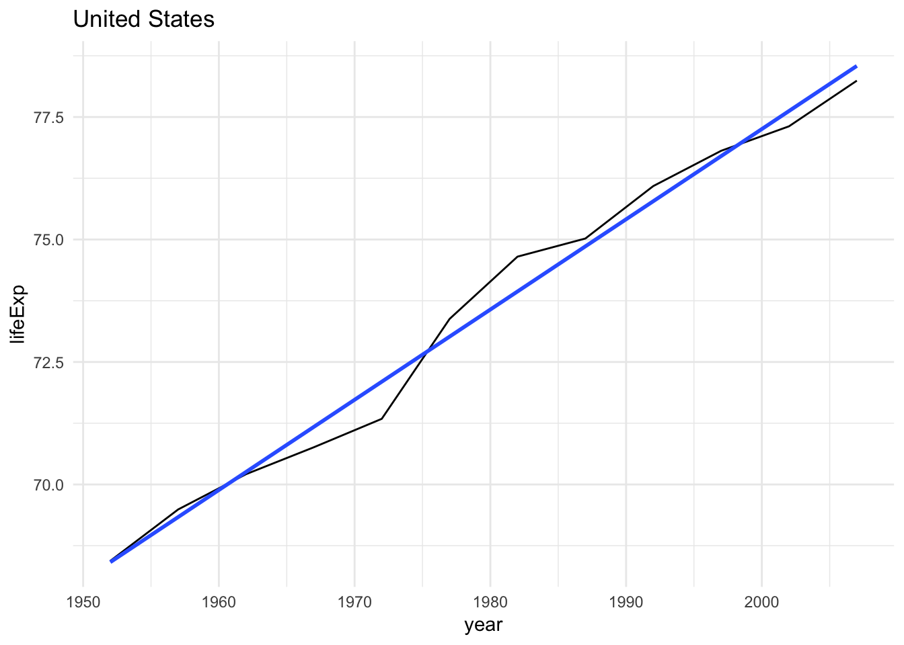
Separate models for each country using map() and nested data frames
What if we want to estimate separate models for every country? We could do this manually, creating a new data frame for each country. But this is tedious and repetitive. We learned last week how to iterate using for loops. We could do this using a for loop, but this will take a bunch of code. Instead, let’s use the map() functions we already learned, but add an additional component on top of that.
Instead of repeating an action for each column (variable), we want to repeat an action for each country, a subset of rows. To do that, we need a new data structure: the nested data frame. To create a nested data frame we start with a grouped data frame, and “nest” it:
by_country <- gapminder %>%
group_by(country, continent) %>%
nest()
by_country## # A tibble: 142 × 3
## country continent data
## <fctr> <fctr> <list>
## 1 Afghanistan Asia <tibble [12 × 4]>
## 2 Albania Europe <tibble [12 × 4]>
## 3 Algeria Africa <tibble [12 × 4]>
## 4 Angola Africa <tibble [12 × 4]>
## 5 Argentina Americas <tibble [12 × 4]>
## 6 Australia Oceania <tibble [12 × 4]>
## 7 Austria Europe <tibble [12 × 4]>
## 8 Bahrain Asia <tibble [12 × 4]>
## 9 Bangladesh Asia <tibble [12 × 4]>
## 10 Belgium Europe <tibble [12 × 4]>
## # ... with 132 more rowsThis looks very different from what you’ve seen in data frames before. Typically every cell in a data frame is a single value. But here, each element in the data column is actually another data frame. This demonstrates the benefits of lists - they can be used recursively to store other lists, which is exactly what data frames are.
Now we have one row per country, with the variables associated with each country stored in their own column. All the original data is still in this nested data frame, just stored in a different way. Note that to see the values of the variables in data, we use the special notation we learned last week:
by_country$data[[1]]## # A tibble: 12 × 4
## year lifeExp pop gdpPercap
## <int> <dbl> <int> <dbl>
## 1 1952 28.801 8425333 779.4453
## 2 1957 30.332 9240934 820.8530
## 3 1962 31.997 10267083 853.1007
## 4 1967 34.020 11537966 836.1971
## 5 1972 36.088 13079460 739.9811
## 6 1977 38.438 14880372 786.1134
## 7 1982 39.854 12881816 978.0114
## 8 1987 40.822 13867957 852.3959
## 9 1992 41.674 16317921 649.3414
## 10 1997 41.763 22227415 635.3414
## 11 2002 42.129 25268405 726.7341
## 12 2007 43.828 31889923 974.5803It’s hard to see the overall structure, but it’s easy to use the map() functions to access this data and analyze it. We have a model fitting function:
country_model <- function(df) {
lm(lifeExp ~ year, data = df)
}And we want to apply it to each country. That is exactly what map() is designed for.
models <- map(by_country$data, country_model)And as we’ve already learned, we could store the models as a new column in by_country to keep all the data and analysis stored together.
by_country <- by_country %>%
mutate(model = map(data, country_model))
by_country## # A tibble: 142 × 4
## country continent data model
## <fctr> <fctr> <list> <list>
## 1 Afghanistan Asia <tibble [12 × 4]> <S3: lm>
## 2 Albania Europe <tibble [12 × 4]> <S3: lm>
## 3 Algeria Africa <tibble [12 × 4]> <S3: lm>
## 4 Angola Africa <tibble [12 × 4]> <S3: lm>
## 5 Argentina Americas <tibble [12 × 4]> <S3: lm>
## 6 Australia Oceania <tibble [12 × 4]> <S3: lm>
## 7 Austria Europe <tibble [12 × 4]> <S3: lm>
## 8 Bahrain Asia <tibble [12 × 4]> <S3: lm>
## 9 Bangladesh Asia <tibble [12 × 4]> <S3: lm>
## 10 Belgium Europe <tibble [12 × 4]> <S3: lm>
## # ... with 132 more rowsNow if we filter or change the order of the observations, models also changes order.
by_country %>%
filter(continent == "Europe")## # A tibble: 30 × 4
## country continent data model
## <fctr> <fctr> <list> <list>
## 1 Albania Europe <tibble [12 × 4]> <S3: lm>
## 2 Austria Europe <tibble [12 × 4]> <S3: lm>
## 3 Belgium Europe <tibble [12 × 4]> <S3: lm>
## 4 Bosnia and Herzegovina Europe <tibble [12 × 4]> <S3: lm>
## 5 Bulgaria Europe <tibble [12 × 4]> <S3: lm>
## 6 Croatia Europe <tibble [12 × 4]> <S3: lm>
## 7 Czech Republic Europe <tibble [12 × 4]> <S3: lm>
## 8 Denmark Europe <tibble [12 × 4]> <S3: lm>
## 9 Finland Europe <tibble [12 × 4]> <S3: lm>
## 10 France Europe <tibble [12 × 4]> <S3: lm>
## # ... with 20 more rowsUnnesting
What if we want to compute residuals for 142 countries and 142 models? We still use the add_residuals() function, but we have to combine it with a map() function call. Because add_residuals() requires two arguments (data and model), we use the map2() function. map2() allows us to map() over two sets of inputs rather than the normal one:
by_country <- by_country %>%
mutate(
resids = map2(data, model, add_residuals)
)
by_country## # A tibble: 142 × 5
## country continent data model resids
## <fctr> <fctr> <list> <list> <list>
## 1 Afghanistan Asia <tibble [12 × 4]> <S3: lm> <tibble [12 × 5]>
## 2 Albania Europe <tibble [12 × 4]> <S3: lm> <tibble [12 × 5]>
## 3 Algeria Africa <tibble [12 × 4]> <S3: lm> <tibble [12 × 5]>
## 4 Angola Africa <tibble [12 × 4]> <S3: lm> <tibble [12 × 5]>
## 5 Argentina Americas <tibble [12 × 4]> <S3: lm> <tibble [12 × 5]>
## 6 Australia Oceania <tibble [12 × 4]> <S3: lm> <tibble [12 × 5]>
## 7 Austria Europe <tibble [12 × 4]> <S3: lm> <tibble [12 × 5]>
## 8 Bahrain Asia <tibble [12 × 4]> <S3: lm> <tibble [12 × 5]>
## 9 Bangladesh Asia <tibble [12 × 4]> <S3: lm> <tibble [12 × 5]>
## 10 Belgium Europe <tibble [12 × 4]> <S3: lm> <tibble [12 × 5]>
## # ... with 132 more rowsWhat if you want to plot the residuals? We need to unnest the residuals:
resids <- unnest(by_country, resids)
resids## # A tibble: 1,704 × 7
## country continent year lifeExp pop gdpPercap resid
## <fctr> <fctr> <int> <dbl> <int> <dbl> <dbl>
## 1 Afghanistan Asia 1952 28.801 8425333 779.4453 -1.10629487
## 2 Afghanistan Asia 1957 30.332 9240934 820.8530 -0.95193823
## 3 Afghanistan Asia 1962 31.997 10267083 853.1007 -0.66358159
## 4 Afghanistan Asia 1967 34.020 11537966 836.1971 -0.01722494
## 5 Afghanistan Asia 1972 36.088 13079460 739.9811 0.67413170
## 6 Afghanistan Asia 1977 38.438 14880372 786.1134 1.64748834
## 7 Afghanistan Asia 1982 39.854 12881816 978.0114 1.68684499
## 8 Afghanistan Asia 1987 40.822 13867957 852.3959 1.27820163
## 9 Afghanistan Asia 1992 41.674 16317921 649.3414 0.75355828
## 10 Afghanistan Asia 1997 41.763 22227415 635.3414 -0.53408508
## # ... with 1,694 more rowsresids %>%
ggplot(aes(year, resid)) +
geom_line(aes(group = country), alpha = 1 / 3) +
geom_smooth(se = FALSE)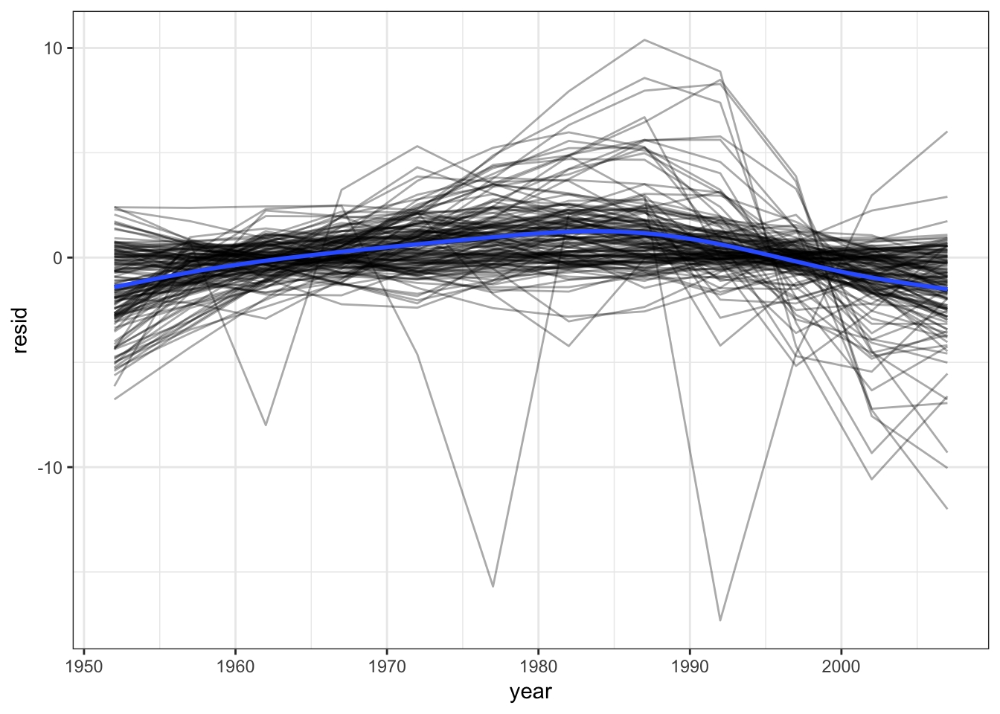
Exercise: linear regression with scorecard
Recall the scorecard data set which contains information on U.S. institutions of higher learning.
library(rcfss)
scorecard## # A tibble: 1,849 × 12
## unitid name state type
## <int> <chr> <chr> <chr>
## 1 450234 ITT Technical Institute-Wichita KS Private, for-profit
## 2 448479 ITT Technical Institute-Swartz Creek MI Private, for-profit
## 3 456427 ITT Technical Institute-Concord CA Private, for-profit
## 4 459596 ITT Technical Institute-Tallahassee FL Private, for-profit
## 5 459851 Herzing University-Brookfield WI Private, for-profit
## 6 482477 DeVry University-Illinois IL Private, for-profit
## 7 482547 DeVry University-Nevada NV Private, for-profit
## 8 482592 DeVry University-Oregon OR Private, for-profit
## 9 482617 DeVry University-Tennessee TN Private, for-profit
## 10 482662 DeVry University-Washington WA Private, for-profit
## # ... with 1,839 more rows, and 8 more variables: cost <int>,
## # admrate <dbl>, satavg <dbl>, avgfacsal <dbl>, pctpell <dbl>,
## # comprate <dbl>, firstgen <dbl>, debt <dbl>Answer the following questions using the statistical modeling tools you have learned.
What is the relationship between admission rate and cost? Report this relationship using a scatterplot.
Click for the solution
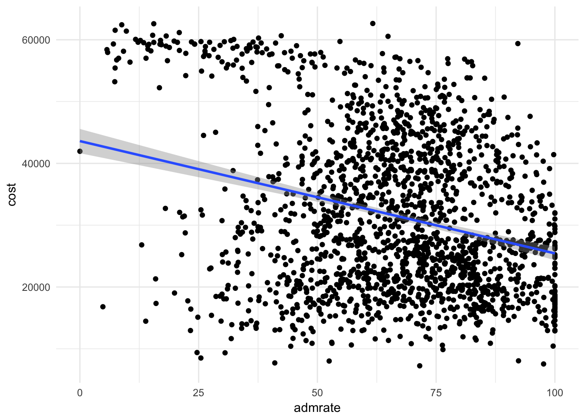ggplot(scorecard, aes(admrate, cost)) + geom_point()Summarize the relationship between admission rate and cost by adding a best-fit line to your scatterplot.
Click for the solution
ggplot(scorecard, aes(admrate, cost)) + geom_point() + geom_smooth(method = "lm")Estimate a linear regression of the relationship between admission rate and cost, and report your results in a tidy table.
Click for the solution
scorecard_mod <- lm(cost ~ admrate, data = scorecard) tidy(scorecard_mod)## term estimate std.error statistic p.value ## 1 (Intercept) 43607.1844 1001.38991 43.54666 1.036472e-284 ## 2 admrate -181.6923 14.38405 -12.63151 3.980318e-35Is the relationship between admission rate and cost different based on the type of college? Visualize the distribution of residuals for each type of college.
Click for the solution
scorecard_resid <- scorecard %>% add_residuals(scorecard_mod) scorecard_resid## # A tibble: 1,849 × 13 ## unitid name state type ## <int> <chr> <chr> <chr> ## 1 450234 ITT Technical Institute-Wichita KS Private, for-profit ## 2 448479 ITT Technical Institute-Swartz Creek MI Private, for-profit ## 3 456427 ITT Technical Institute-Concord CA Private, for-profit ## 4 459596 ITT Technical Institute-Tallahassee FL Private, for-profit ## 5 459851 Herzing University-Brookfield WI Private, for-profit ## 6 482477 DeVry University-Illinois IL Private, for-profit ## 7 482547 DeVry University-Nevada NV Private, for-profit ## 8 482592 DeVry University-Oregon OR Private, for-profit ## 9 482617 DeVry University-Tennessee TN Private, for-profit ## 10 482662 DeVry University-Washington WA Private, for-profit ## # ... with 1,839 more rows, and 9 more variables: cost <int>, ## # admrate <dbl>, satavg <dbl>, avgfacsal <dbl>, pctpell <dbl>, ## # comprate <dbl>, firstgen <dbl>, debt <dbl>, resid <dbl>ggplot(scorecard_resid, aes(resid)) + geom_freqpoly(aes(color = type))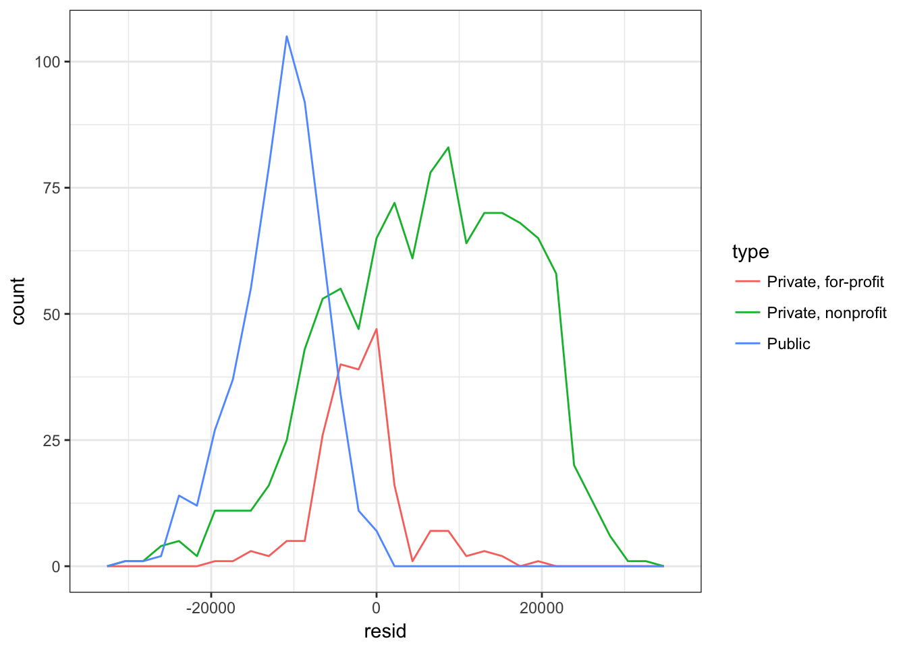
It would appear the relationship between admission rate and cost is different for each college type. The distributions for private schools (for or non-profit) are not centered around 0.
Estimate separate linear regression models of the relationship between admission rate and cost for each type of college.
Click for the solution
type_model <- function(df) { lm(cost ~ admrate, data = df) } by_type <- scorecard %>% group_by(type) %>% nest() by_type## # A tibble: 3 × 2 ## type data ## <chr> <list> ## 1 Private, for-profit <tibble [216 × 11]> ## 2 Private, nonprofit <tibble [1,092 × 11]> ## 3 Public <tibble [541 × 11]>by_type <- by_type %>% mutate(model = map(data, type_model), resids = map2(data, model, add_residuals)) by_type## # A tibble: 3 × 4 ## type data model resids ## <chr> <list> <list> <list> ## 1 Private, for-profit <tibble [216 × 11]> <S3: lm> <tibble [216 × 12]> ## 2 Private, nonprofit <tibble [1,092 × 11]> <S3: lm> <tibble [1,092 × 12]> ## 3 Public <tibble [541 × 11]> <S3: lm> <tibble [541 × 12]>Use an anonymous function with the one-sided formula format:
by_type %>% mutate(model = map(data, ~lm(cost ~ admrate, data = .)), resids = map2(data, model, add_residuals))Compare the results of the new series of models to the old one by graphing the new residuals. Is it better to use a single model or three sets of models to explain this relationship?
Click for the solution
# results of original model glance(scorecard_mod)## r.squared adj.r.squared sigma statistic p.value df logLik ## 1 0.08035796 0.07985432 12146.48 159.5552 3.980318e-35 2 -19784.78 ## AIC BIC deviance df.residual ## 1 39575.57 39592.1 269402514670 1826# results of new models by_type %>% mutate(glance = map(model, glance)) %>% unnest(glance, .drop = TRUE)## # A tibble: 3 × 12 ## type r.squared adj.r.squared sigma statistic ## <chr> <dbl> <dbl> <dbl> <dbl> ## 1 Private, for-profit 0.0488797330 0.0442626443 5189.999 10.5867001 ## 2 Private, nonprofit 0.1181801128 0.1173620981 11200.479 144.4718626 ## 3 Public 0.0009124439 -0.0009445961 4123.599 0.4913432 ## # ... with 7 more variables: p.value <dbl>, df <int>, logLik <dbl>, ## # AIC <dbl>, BIC <dbl>, deviance <dbl>, df.residual <int># what about the new residuals? resids <- unnest(by_type, resids) ggplot(resids, aes(resid)) + geom_freqpoly(aes(color = type))
Our residuals are now centered around 0 for each type of college. Obviously we could go much deeper here, but this is a good starting point.
Acknowledgments
- For more information on statistical learning and the math behind these methods, see the awesome book An Introduction to Statistical Learning
Session Info
devtools::session_info()## setting value
## version R version 3.3.2 (2016-10-31)
## system x86_64, darwin13.4.0
## ui RStudio (1.0.136)
## language (EN)
## collate en_US.UTF-8
## tz America/Chicago
## date 2017-02-22
##
## package * version date source
## assertthat 0.1 2013-12-06 CRAN (R 3.3.0)
## backports 1.0.5 2017-01-18 CRAN (R 3.3.2)
## base64enc 0.1-3 2015-07-28 CRAN (R 3.3.0)
## broom * 0.4.2 2017-02-13 CRAN (R 3.3.2)
## car 2.1-4 2016-12-02 CRAN (R 3.3.2)
## caret * 6.0-73 2016-11-10 CRAN (R 3.3.2)
## class 7.3-14 2015-08-30 CRAN (R 3.3.2)
## codetools 0.2-15 2016-10-05 CRAN (R 3.3.2)
## colorspace 1.3-2 2016-12-14 CRAN (R 3.3.2)
## config 0.2 2016-08-02 CRAN (R 3.3.0)
## DBI 0.5-1 2016-09-10 CRAN (R 3.3.0)
## devtools 1.12.0 2016-06-24 CRAN (R 3.3.0)
## digest 0.6.12 2017-01-27 CRAN (R 3.3.2)
## dplyr * 0.5.0 2016-06-24 CRAN (R 3.3.0)
## e1071 1.6-8 2017-02-02 CRAN (R 3.3.2)
## evaluate 0.10 2016-10-11 CRAN (R 3.3.0)
## forcats * 0.2.0 2017-01-23 CRAN (R 3.3.2)
## foreach * 1.4.3 2015-10-13 CRAN (R 3.3.0)
## foreign 0.8-67 2016-09-13 CRAN (R 3.3.2)
## gam * 1.14 2016-09-10 CRAN (R 3.3.0)
## gapminder * 0.2.0 2015-12-31 CRAN (R 3.3.0)
## ggplot2 * 2.2.1 2016-12-30 CRAN (R 3.3.2)
## gtable 0.2.0 2016-02-26 CRAN (R 3.3.0)
## haven * 1.0.0 2016-09-23 cran (@1.0.0)
## highr 0.6 2016-05-09 CRAN (R 3.3.0)
## hms 0.3 2016-11-22 CRAN (R 3.3.2)
## htmltools 0.3.5 2016-03-21 CRAN (R 3.3.0)
## httpuv 1.3.3 2015-08-04 CRAN (R 3.3.0)
## httr 1.2.1 2016-07-03 CRAN (R 3.3.0)
## ISLR * 1.0 2013-06-11 CRAN (R 3.3.0)
## iterators 1.0.8 2015-10-13 CRAN (R 3.3.0)
## jsonlite 1.2 2016-12-31 CRAN (R 3.3.2)
## knitr * 1.15.1 2016-11-22 cran (@1.15.1)
## labeling 0.3 2014-08-23 CRAN (R 3.3.0)
## lattice * 0.20-34 2016-09-06 CRAN (R 3.3.2)
## lazyeval 0.2.0 2016-06-12 CRAN (R 3.3.0)
## lme4 1.1-12 2016-04-16 cran (@1.1-12)
## lubridate 1.6.0 2016-09-13 CRAN (R 3.3.0)
## magrittr 1.5 2014-11-22 CRAN (R 3.3.0)
## MASS 7.3-45 2016-04-21 CRAN (R 3.3.2)
## Matrix 1.2-8 2017-01-20 CRAN (R 3.3.2)
## MatrixModels 0.4-1 2015-08-22 CRAN (R 3.3.0)
## memoise 1.0.0 2016-01-29 CRAN (R 3.3.0)
## mgcv 1.8-17 2017-02-08 CRAN (R 3.3.2)
## mime 0.5 2016-07-07 CRAN (R 3.3.0)
## minqa 1.2.4 2014-10-09 cran (@1.2.4)
## mnormt 1.5-5 2016-10-15 CRAN (R 3.3.0)
## ModelMetrics 1.1.0 2016-08-26 CRAN (R 3.3.0)
## modelr * 0.1.0 2016-08-31 CRAN (R 3.3.0)
## munsell 0.4.3 2016-02-13 CRAN (R 3.3.0)
## nlme 3.1-131 2017-02-06 CRAN (R 3.3.2)
## nloptr 1.0.4 2014-08-04 cran (@1.0.4)
## nnet * 7.3-12 2016-02-02 CRAN (R 3.3.2)
## nycflights13 0.2.2 2017-01-27 CRAN (R 3.3.2)
## pbkrtest 0.4-6 2016-01-27 CRAN (R 3.3.0)
## plyr 1.8.4 2016-06-08 CRAN (R 3.3.0)
## pROC * 1.9.1 2017-02-05 CRAN (R 3.3.2)
## psych 1.6.12 2017-01-08 CRAN (R 3.3.2)
## purrr * 0.2.2 2016-06-18 CRAN (R 3.3.0)
## quantreg 5.29 2016-09-04 CRAN (R 3.3.0)
## R6 2.2.0 2016-10-05 CRAN (R 3.3.0)
## rappdirs 0.3.1 2016-03-28 CRAN (R 3.3.0)
## rcfss * 0.1.3 2017-02-16 local
## Rcpp 0.12.9 2017-01-14 CRAN (R 3.3.2)
## readr * 1.0.0 2016-08-03 CRAN (R 3.3.0)
## readxl 0.1.1 2016-03-28 CRAN (R 3.3.0)
## reshape2 1.4.2 2016-10-22 CRAN (R 3.3.0)
## rmarkdown 1.3 2016-12-21 CRAN (R 3.3.2)
## rprojroot 1.2 2017-01-16 CRAN (R 3.3.2)
## RSQLite * 1.1-2 2017-01-08 CRAN (R 3.3.2)
## rstudioapi 0.6 2016-06-27 CRAN (R 3.3.0)
## rvest 0.3.2 2016-06-17 CRAN (R 3.3.0)
## scales 0.4.1 2016-11-09 CRAN (R 3.3.1)
## shiny * 1.0.0 2017-01-12 CRAN (R 3.3.2)
## sparklyr * 0.5.2 2017-02-16 CRAN (R 3.3.2)
## SparseM 1.74 2016-11-10 CRAN (R 3.3.2)
## stringi 1.1.2 2016-10-01 CRAN (R 3.3.0)
## stringr * 1.1.0 2016-08-19 cran (@1.1.0)
## tibble * 1.2 2016-08-26 cran (@1.2)
## tidyr * 0.6.1 2017-01-10 CRAN (R 3.3.2)
## tidyverse * 1.1.1 2017-01-27 CRAN (R 3.3.2)
## titanic * 0.1.0 2015-08-31 CRAN (R 3.3.0)
## withr 1.0.2 2016-06-20 CRAN (R 3.3.0)
## xml2 1.1.1 2017-01-24 CRAN (R 3.3.2)
## xtable 1.8-2 2016-02-05 CRAN (R 3.3.0)
## yaml 2.1.14 2016-11-12 cran (@2.1.14)This work is licensed under the CC BY-NC 4.0 Creative Commons License.